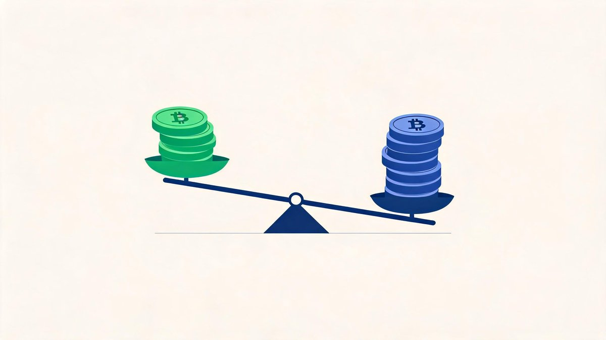
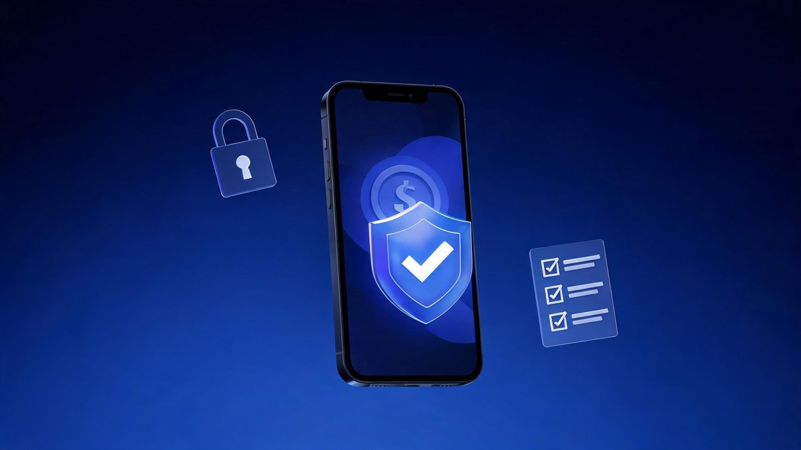
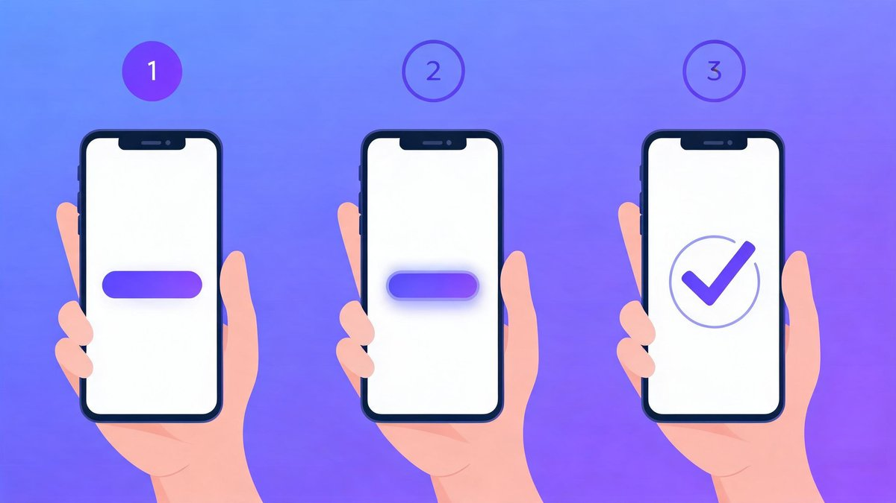

Top 3 crypto exchanges (2026) for beginners — compare safety, fees and apps, then follow a simple 5‑step first‑buy checklist. Updated: Sep 21, 2026 · Educational only, not financial advice · Availability varies by country.
🔑 Key Takeaways
- Quick picks: Coinbase (easiest), Kraken (safety + grow into Pro), Bitstamp (reliable spot)
- Pay less: use bank transfers and learn basic maker/taker orders in the Advanced/Pro view
- Stay safe: turn on app‑based 2FA and withdrawal allow‑listing before larger deposits
- Start small: test with a small buy; set up recurring buys (DCA) if it fits your plan
Who This Guide Is For
Complete beginners and casual investors who want a safe, straightforward way to buy their first Bitcoin, Ethereum, or major altcoins—without getting lost in pro dashboards or hidden fees.
How We Picked the Top 3
- Security & regulation: track record, proof‑of‑reserves or attestations, custody design, and regional licensing
- Beginner UX: clean mobile app, simple buy/sell, clear receipts, helpful onboarding
- Fees you can understand: transparent pricing with a path to lower maker/taker fees as you learn
- Funding methods: bank transfer, card, and local options (varies by country)
- Asset coverage: core coins for beginners; some long‑tail assets once you’re ready
- Support & education: chat or ticket support, in‑app lessons, and clear how‑tos
The 3 Best Crypto Exchanges for Beginners (2026)
1) Kraken — Best overall for safety and long‑term investing
Why we like it: long track record, strong security culture, straightforward funding, and a Pro interface you can grow into when ready.
Pros: reputation for security; clear fee tiers; beginner and Pro modes; strong support.
Cons: advanced features limited in some regions; smaller selection than some global‑only platforms.
Fees: tiered maker/taker pricing with lower rates on Pro; simple buy/sell incurs higher convenience fees.
Best for: beginners who want safety first, then lower fees as they learn limit orders on Pro.
2) Coinbase — Easiest onboarding and education
Why we like it: very smooth signup, intuitive mobile app, and robust learn‑to‑earn style education. Advanced Trade reduces fees once you’re comfortable.
Pros: excellent UX; strong brand trust in many regions; great education; wide fiat on‑ramps.
Cons: simple buys can be pricey; some assets/features vary by country.
Fees: convenience fees on simple buy/sell; lower maker/taker rates on Advanced Trade.
Best for: first‑time buyers who value a polished app and easy funding.
3) Bitstamp — Reliable, regulated, and simple
Why we like it: one of the longest‑running exchanges with a reputation for reliability and straightforward spot trading.
Pros: mature platform; clear fees; strong compliance culture; good for larger bank transfers.
Cons: smaller coin list than global‑first platforms; fewer advanced products.
Fees: tiered by 30‑day volume; bank transfers often cheapest funding path.
Best for: beginners who want a conservative, regulated venue for core assets.
Quick Comparison
| Exchange | Best for | Fees style | Funding | Notes |
|---|---|---|---|---|
| Kraken | Safety, grow into Pro | Maker/taker tiers; simple buys cost more | Bank transfer, card (region‑dependent) | Strong support; good for DCA |
| Coinbase | Fast onboarding, education | Convenience fees; Advanced Trade lower | Wide on‑ramps (varies by country) | Excellent mobile UX |
| Bitstamp | Reliable, regulated spot | Tiered by volume | Bank transfer focus; card options vary | Conservative feature set |
Feature Checklist (At a Glance)
- Kraken: recurring buys, Advanced (Pro) trading, strong security track record
- Coinbase: excellent mobile UX, extensive education, Advanced Trade for lower fees
- Bitstamp: reliable bank transfers, simple spot trading, transparent fee tiers
Fees 101: What a Beginner Should Check

- Convenience vs. maker/taker: one‑tap buys cost more. Learn basic limit orders to reduce costs
- Deposit/withdrawal fees: bank transfers are often cheapest; cards are fast but pricier
- Spreads: the gap between buy and sell—tighter is better, most visible on liquid assets like BTC/ETH
- Network fees: on‑chain withdrawals incur blockchain fees; consider cheaper networks when available
Safety Checklist Before You Buy
- Enable app‑based 2FA (Authenticator, not SMS where possible)
- Turn on withdrawal allow‑listing and email confirmations
- Use a unique, strong password stored in a password manager
- Beware of phishing—double‑check URLs and never share 2FA codes
- Consider self‑custody for long‑term holds after you’re comfortable

First Purchase: Step-by-Step

- Pick an exchange above that’s available in your country
- Sign up and complete identity verification (KYC)
- Add a payment method (bank transfer is usually cheapest)
- Fund your account and make a small test buy (e.g., $10)
- Practice placing a limit order on the Pro/Advanced view to lower fees
- Enable 2FA and withdrawal allow‑listing before larger deposits
New to comparing platforms? Read what to look for in a crypto exchange (2026) and how to set up and verify your account — both guides are coming next in this series.
Beginner Mistakes to Avoid
- Using one‑tap card buys only (highest fees) and never learning limit orders
- Skipping 2FA or leaving withdrawal allow‑listing off
- Buying illiquid long‑tail tokens before learning on BTC/ETH
- Moving large amounts on‑chain without checking network fees and addresses
FAQs
Which crypto exchange is safest for beginners?
Look for a long operating history, transparent custody, regional licensing, security features (2FA, allow‑listing), and clear incident reporting. See our picks above for strong options.
How do I pay the lowest fees?
Avoid one‑tap convenience buys. Use bank transfers for deposits and learn basic maker/taker orders in the Pro/Advanced view.
Can I dollar‑cost average (DCA) on these exchanges?
Yes—most support recurring buys. Compare fees and scheduling. See our guide to the best exchanges for DCA.
Are mobile apps good enough for beginners?
Yes. All three offer capable iOS/Android apps with simple buy/sell. Start there, then explore Pro/Advanced on desktop for lower fees.
Do I need a wallet before I buy?
No. Exchanges provide hosted wallets. For long‑term storage, consider moving to a personal hardware wallet once you’re comfortable.
Is this financial advice?
No—this is educational. Only invest what you can afford to lose.
Is KYC required and how long does it take?
Yes. Identity checks (KYC) are required in most regions. Fast approvals can be minutes; manual reviews can take longer depending on your documents and country.
Can I start small and add more later?
Yes. Make a small test buy first, then add funds. Many platforms support recurring buys (DCA) so you can automate small amounts over time.
Are these exchanges available in my country?
Availability differs by region and changes over time. Check each exchange’s country support page during signup for the latest list.
The Bottom Line
If you want the simplest start, choose Coinbase. If you want a safety‑first platform you can grow into, try Kraken. If you prefer a conservative, regulated venue for spot buys, consider Bitstamp. Whichever you pick, enable 2FA, understand fees, and start small. Before you buy, skim our complete crypto security guide, compare Bitcoin vs Ethereum as your first asset, and see our hardware wallet picks for long‑term storage.
Sources: Kraken Help Center · Fees, Coinbase Help · Fees, Bitstamp Support · Fees. Informational only, not financial advice. Availability varies by region and regulation.